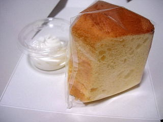
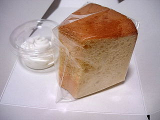
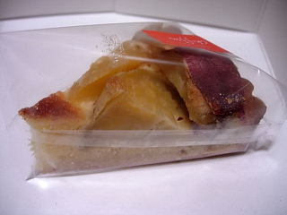
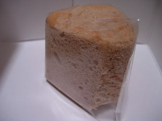
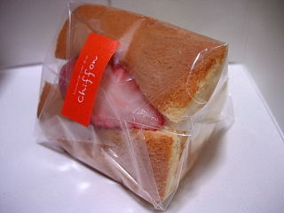

シフォンのみかんシフォン
2008/1/26

みかんシフォンは期間限定商品みたいです。オレンジじゃなくてみかんなところがいいですね。
ここのシフォンは細かい生地でふんわりとしますね。ほんのりとしたみかん味と、マイルドな甘さが上品な感じでした。

こっちは和三盆シフォンです。甘さあっさりなシフォンでした。
島根県出雲市大津町264-3
今年も一年お疲れさまでしたって事で、ケーキを買って食べました。

さつま芋のタルトです。見たまんまな味でした。さつま芋が多いので、さつま芋自体の味がしっかりする、シンプルな味のタルトです。
薩摩芋部分に、変に味が付いてないのがいいですね。タルト部分もクッキー味だけなので全体的に地味ですが、まとまりが良くていい味だなと思いました。

シナモンのシフォンです。シナモンの商品ていうと砂糖味が強いイメージがあるんですが、これはシフォンケーキなので、そんなに砂糖味は強くなく、シナモンの良い香りと味がしっかり味わえて美味しかったです。

苺のケーキです。シフォンに苺とクリームが加わって、見た目がちょっと派手で可愛いです。
2008/1/26

みかんシフォンは期間限定商品みたいです。オレンジじゃなくてみかんなところがいいですね。
ここのシフォンは細かい生地でふんわりとしますね。ほんのりとしたみかん味と、マイルドな甘さが上品な感じでした。

こっちは和三盆シフォンです。甘さあっさりなシフォンでした。
2008/01/03
抹茶のシフォンケーキでロールケーキを作りましたみたいな感じがして、好きなケーキです。
ロールケーキなのでクリームが多く入っていて、甘さがちゃんとあります。
普通にシフォンケーキも好きなんですが、「シフォンケーキはちょっと物足りないなー」って時があるんですよね。
シフォンケーキって上品な味のものが多いので「味や甘さがもうちょっと欲しい！」って思った時に丁度いい商品です。
2007/11/2
しっとりしててやわらかめのタルトでした。
固めのタルトって粉がボロボロ落ちちゃったり、タルトが綺麗にカット出来なくて食べにくいので、このしっとりタイプのものの方が個人的には好きです。
りんごの方はナチュラルなりんご味で、いい味でした。
変に味付けが付いてなくていいですね。フルーツの商品ってシロップ味が強かったり、調味料で味を出してたりする商品があるんですが、ここのはフルーツ自体の味がしっかりして美味しかったです。
2007/03/29
ココアシフォンはココアが多く入っていて、しっかり味が付いていました。色もしっかりココア色してて、ちょっとシフォンケーキっぽくないんですが、食べてみるとシフォンケーキらしく、軽くて食べやすかったです。ふんわりマイルドなココアケーキな感じでした。
抹茶ろーるですが、マイルドな抹茶味がとっても美味しかったです。
抹茶の商品の中には、抹茶が粉っぽかったり、嫌な苦味があるあったりするものがあるんですが、これはそうゆうのが全然なく、おいしい抹茶味が楽しめました。素材がいいんでしょうかね。
ロールケーキ内のクリームは固めで、食べ易かったです。味も砂糖甘い感じじゃなく、クリーム味が濃くて美味しかったです。
今日は2つともいい味で満足でした。